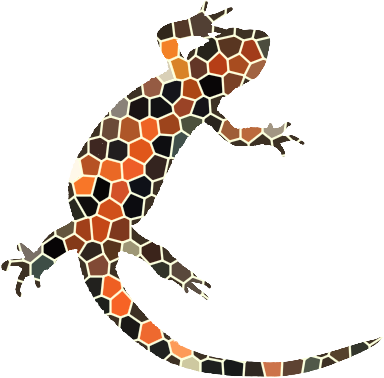

This gallery includes images from our class starter folder. The campus images connect to my life as a student.
Campus Images
The Lilley Library

Penn State
Artwork from Our Class Starter

My DIGIT 100 Portfolio
This gallery includes images from our class starter folder. The campus images connect to my life as a student.
